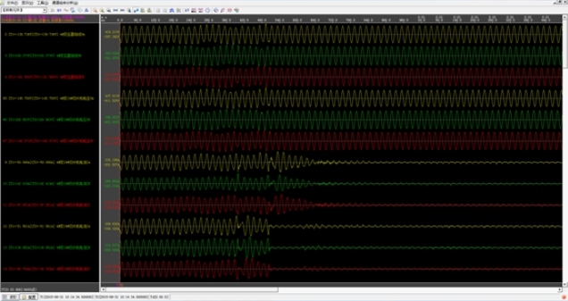
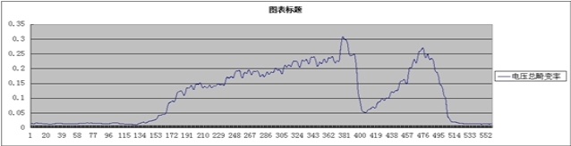

故障时间：2017年8月31日 10时14分34秒504毫秒
过程描述：切片机于2017年8月31日 10时14分34秒504毫秒大部分同时运行电流消失，18#机133毫秒后电流消失，电流消失前发现有电压波形畸变情况。
启动类型：A相电流突变量启动
故障波形如下图：

故障分析
母线谐波分析：
Ua总谐波畸变率曲线：
Ua故障前电压畸变率小于2%,
2017年8月31日10:14分34秒0237至0496返回（按15%定值），共持续259毫秒，最大值出现在2017年8月31日10:14分34秒0379毫秒，最大值30.62%。

故障分析结论：
从故障波形看，故障前母线电压正常，谐波畸变率总体小于2%。
电压母线出现过电压越限（高450V低380V），该行为在Ua总持续时间256毫秒 Ub总持续时间3毫秒，Uc总持续时间109毫秒，该行为有可能导致切片机停机，因此电压越限是切片机集体停机可能原因之一。
母线电压畸变率出现异常（按照15%），且持续时间长Ua 259毫秒、Ub251毫秒、Uc299毫秒，该行为有可能导致切片机停机，但是由于切片机没有给出电压畸变率的整定范围和动作时间，设备国外厂商没有给出具体的说明，因此母线电压畸变越限可能是切片机集体停机原因之一。
故障录波发现，电压畸变主要是二次谐波成分，占总谐波含量99.9%，建议，应该主要分析二次谐波来源和采取治理措施。
因切片机连续几次全停，且故障码一致，故应该要求厂方解释造成该故障的整定值和动作逻辑，并且能够尽量调整正整定值和动作逻辑，以适应用户的电源环境。